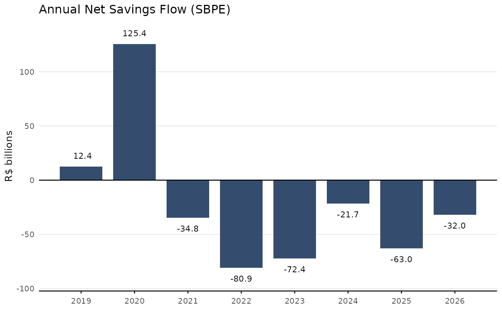
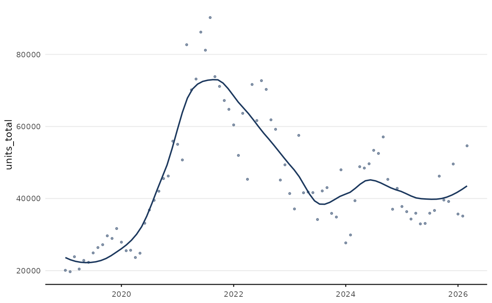
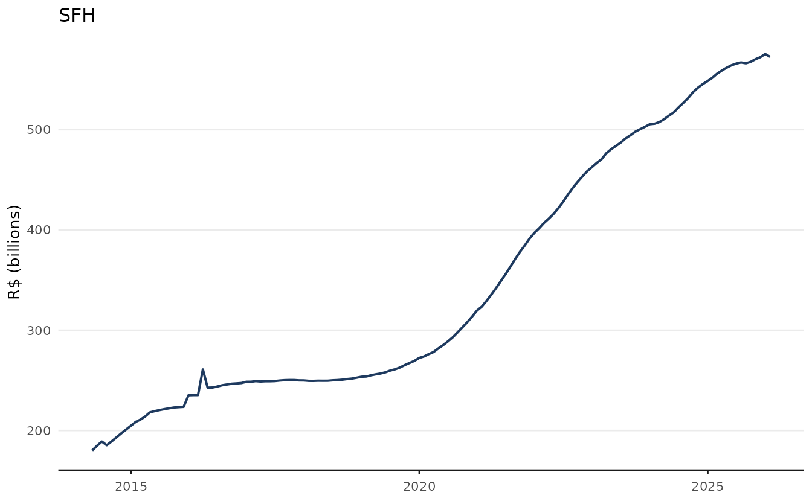
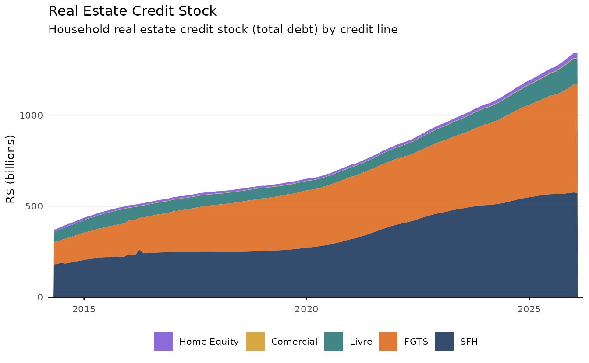

Introduction
This vignette provides a minimal introduction to the
realestatebr package, showing how to use its core
functions. Since realestatebr returns tibble
as default values, we recommend using it together with the
dplyr package, though conversion do data.table
is trivial.
The code below defines a common theme for all plots in this vignette and is required to fully replicate the code in this document. Despite this, this code is entirely optional and can be omitted.
library(ggplot2)
color_palette <- c(
"#1E3A5F",
"#DD6B20",
"#2C7A7B",
"#D69E2E",
"#805AD5",
"#C53030"
)
theme_series <- function() {
theme_minimal(
# swap for other font if needed
base_family = "Avenir",
base_size = 10
) +
theme(
panel.grid.minor = element_blank(),
panel.grid.major.x = element_blank(),
axis.line.x = element_line(color = "gray10", linewidth = 0.5),
axis.ticks.x = element_line(color = "gray10", linewidth = 0.5),
axis.title.x = element_blank(),
legend.position = "bottom",
palette.color.discrete = color_palette
)
}realestatebr provides a unified interface to Brazilian
real estate data from multiple public sources. All datasets are returned
as tidy tibble objects.
Core Interface
The goal of realestatebr is to provide a unified
interface to Brazilian real estate data from multiple public sources.
All datasets are returned as tidy tibble objects. The
package is centered around a key function:
get_dataset(name, table) which retrieves any dataset by
name. Without a table argument it returns the default
table; use table to select a specific sub-table.
- Use
get_dataset()main function to retrieve datasets.
# Default table
abecip <- get_dataset("abecip")
# Specific table
sbpe <- get_dataset("abecip", table = "units")In order to explore which datasets are available, use
list_datasets() and get_dataset_info().
-
list_datasets()returns a catalogue of all available datasets and their tables.
ds <- list_datasets()| name | title | source | available_tables | frequency |
|---|---|---|---|---|
| abecip | ABECIP Housing Credit Indicators | ABECIP - Associação Brasileira das Entidades de Crédito Imobiliário | sbpe, units, cgi | monthly |
| abrainc | ABRAINC-FIPE Primary Market Indicators | ABRAINC/FIPE | indicator, radar, leading | quarterly |
| bcb_realestate | BCB Real Estate Market Data | Banco Central do Brasil | accounting, application, indices, sources, units | monthly |
| bcb_series | BCB Economic Series | Banco Central do Brasil - SGS | price, credit, production, interest-rate, exchange, government, real-estate | varies (daily/monthly/quarterly) |
| fgv_ibre | FGV IBRE Real Estate Indicators | FGV IBRE | (single table) | monthly |
| rppi | Brazilian Residential Property Price Indices | Multiple (FIPE/ZAP, IVGR, IGMI, IQA, IQAIW, IVAR, SECOVI-SP) | fipezap, ivgr, igmi, iqa, iqaiw, ivar, secovi_sp, sale, rent, all | monthly |
| rppi_bis | BIS Residential Property Price Indices | Bank for International Settlements | selected, detailed_monthly, detailed_quarterly, detailed_annual, detailed_halfyearly | quarterly |
| secovi | SECOVI-SP Real Estate Market Data | SECOVI-SP - Sindicato da Habitação | condo, rent, launch, sale | monthly |
-
get_dataset_info()shows available tables and metadata for a given dataset.
info <- get_dataset_info("abecip")
names(info$categories)
#> [1] "sbpe" "units" "cgi"The source Argument
The source argument from get_dataset()
controls where data comes from. The default ("auto") checks
the local cache first, then falls back to the GitHub release. Typically,
the best option is to use the default or "github". Choosing
"fresh" will download the data from the original source:
while this guarantees the most recent data, it is slower.
get_dataset("abecip", source = "cache") # local cache (instant, works offline)
get_dataset("abecip", source = "github") # GitHub release
get_dataset("abecip", source = "fresh") # direct from the original sourceCache files are stored in the user data directory and can be
inspected with list_cached_files() or cleared with
clear_user_cache().
Example: Housing Credit Cycle
SBPE (Sistema Brasileiro de Poupança e Empréstimo) is the primary
funding mechanism for residential mortgages in Brazil. The table
sbpe fromabecip` tracks the deposits and
withdrawals from saving accounts, that help finance real estate
construction and acquisition.
sbpe <- get_dataset("abecip", table = "sbpe")
glimpse(sbpe)
#> Rows: 540
#> Columns: 15
#> $ date <date> 1982-01-01, 1982-02-01, 1982-03-01, 1982-04-01, 198…
#> $ sbpe_inflow <dbl> 238234.1, 224080.0, 247218.8, 264925.0, 227636.3, 31…
#> $ sbpe_outflow <dbl> 261523.1, 161176.0, 118662.8, 378395.0, 137201.3, 15…
#> $ sbpe_netflow <dbl> -23289, 62904, 128556, -113470, 90435, 164739, -9934…
#> $ sbpe_netflow_pct <dbl> -0.009387130, 0.021881448, 0.043761242, -0.037006429…
#> $ sbpe_yield <dbl> 417103, 0, 0, 485995, 0, 0, 642432, 0, 0, 957944, 0,…
#> $ sbpe_stock <dbl> 2874764, 2937668, 3066224, 3438749, 3529184, 3693923…
#> $ rural_inflow <dbl> NA, NA, NA, NA, NA, NA, NA, NA, NA, NA, NA, NA, NA, …
#> $ rural_outflow <dbl> NA, NA, NA, NA, NA, NA, NA, NA, NA, NA, NA, NA, NA, …
#> $ rural_netflow <dbl> NA, NA, NA, NA, NA, NA, NA, NA, NA, NA, NA, NA, NA, …
#> $ rural_netflow_pct <dbl> NA, NA, NA, NA, NA, NA, NA, NA, NA, NA, NA, NA, NA, …
#> $ rural_yield <dbl> NA, NA, NA, NA, NA, NA, NA, NA, NA, NA, NA, NA, NA, …
#> $ rural_stock <dbl> NA, NA, NA, NA, NA, NA, NA, NA, NA, NA, NA, NA, NA, …
#> $ total_stock <dbl> NA, NA, NA, NA, NA, NA, NA, NA, NA, NA, NA, NA, NA, …
#> $ total_netflow <dbl> NA, NA, NA, NA, NA, NA, NA, NA, NA, NA, NA, NA, NA, …The plot below shows the annual net savings flow in recent years.
# Annual net credit flow
sbpe_annual <- sbpe |>
filter(date >= as.Date("2019-01-01")) |>
mutate(year = lubridate::year(date)) |>
summarise(net_flow = sum(sbpe_netflow, na.rm = TRUE) / 1e3, .by = year) |>
mutate(
label_num = format(round(net_flow, 1)),
ypos = if_else(net_flow > 0, net_flow + 10, net_flow - 10)
)
ggplot(sbpe_annual, aes(year, net_flow)) +
geom_col(fill = color_palette[1], alpha = 0.9, width = 0.8) +
geom_text(aes(y = ypos, label = label_num), size = 3) +
geom_hline(yintercept = 0) +
scale_x_continuous(breaks = 2019:2026) +
labs(
title = "Annual Net Savings Flow (SBPE)",
x = NULL,
y = "R$ billions"
) +
theme_series()
The companion table "units" contains monthly counts of
financed units.
units <- get_dataset("abecip", table = "units")
glimpse(units)
#> Rows: 291
#> Columns: 7
#> $ date <date> 2002-01-01, 2002-02-01, 2002-03-01, 2002-04-01,…
#> $ units_construction <dbl> 200, 483, 1049, 684, 571, 1109, 216, 506, 1698, …
#> $ units_acquisition <dbl> 1455, 1456, 1522, 1723, 1536, 1536, 1706, 1838, …
#> $ units_total <dbl> 1655, 1939, 2571, 2407, 2107, 2645, 1922, 2344, …
#> $ currency_construction <dbl> 13.540470, 32.117295, 62.592800, 44.422429, 23.4…
#> $ currency_acquisition <dbl> 83.95237, 96.12279, 101.71222, 108.14803, 98.281…
#> $ currency_total <dbl> 97.49284, 128.24008, 164.30502, 152.57046, 121.7…The plot shows the amount of units financed per month together with a LOESS trend line.
# SBPE units financed per year
units_recent <- units |>
filter(date >= as.Date("2019-01-01"))
ggplot(units_recent, aes(date, units_total)) +
geom_point(alpha = 0.5, size = 0.8, color = color_palette[1]) +
geom_smooth(
color = color_palette[1],
lwd = 0.7,
se = FALSE,
method = stats::loess,
method.args = list(span = 0.4)) +
theme_series()
Example: Real Estate Credit Portfolio
The bcb_realestate dataset imports all real estate
statistics from the Brazilian
Central Bank. This is a relatively large dataset and exploring can
be cumbersome. Each series is uniquely identified dy date
and series_info. Helper functions v1,
v2, …, v5, abbrev_state,
category, and type are provided to simplify
the use of the dataset.
The code below shows how to access a specific series and also how to fetch a group of related series.
bcb <- get_dataset("bcb_realestate")
# Get a specific series
sfh_pf <- bcb |>
filter(series_info == "credito_estoque_carteira_credito_pf_sfh_br")
# Get the all the related series for 'estoque_carteira_credito_pf'
credit_stock <- bcb |>
filter(
category == "credito",
type == "estoque",
v1 == "carteira",
v2 == "credito",
v3 == "pf",
# since v4 is left blank, we get all credit lines
v5 == "br"
)
# The helper columns essentially separate the 'series_info' column allowing
# for easier filtering. It's equivalent to filtering by regex
credit_stock <- bcb |>
filter(grepl(
"(?<=credito_estoque_carteira_credito_pf_).+_br$",
series_info,
perl = TRUE
))The single series shows only the values from SFH (specific credit line).
ggplot(sfh_pf, aes(date, value / 1e9)) +
geom_line(lwd = 0.7, color = color_palette[1]) +
labs(title = "SFH", y = "R$ (billions)") +
theme_series()
The grouped series show the entire household credit stock by credit line.
credit_labels <- c(
"Home Equity" = "home-equity",
"Comercial" = "comercial",
"Livre" = "livre",
"FGTS" = "fgts",
"SFH" = "sfh"
)
credit_stock <- credit_stock |>
mutate(
credit_line_label = factor(
v4,
levels = credit_labels,
labels = names(credit_labels)
)
)
ggplot(credit_stock, aes(date, value / 1e9)) +
geom_area(aes(fill = credit_line_label), alpha = 0.9) +
scale_fill_manual(values = rev(color_palette[1:5])) +
scale_x_date(expand = expansion(mult = c(0.01))) +
scale_y_continuous(expand = expansion(mult = c(0, 0.05))) +
labs(
title = "Real Estate Credit Stock",
subtitle = "Household real estate credit stock (total debt) by credit line",
y = "R$ (billions)",
fill = NULL
) +
theme_series()
As a final warning, note that the bcb_realestate dataset
follows the YYYY-MM-DD format using the last day of the
month as default value (e.g. 2023-01-31). This can cause
issues when merging with other datasets, since the first day of the
month is the more common date format (e.g. 2023-01-01).
To avoid this, use lubridate::floor_date(date, 'month').
Future versions of realestatebr might provide this as a
default behavior.
Next Steps
-
vignette("working-with-rppi")— property price indices in depth -
?get_dataset— full parameter reference
Reference (all datasets)
The available datasets are listed below.
| Dataset | Source | Tables | Status |
|---|---|---|---|
abecip |
ABECIP |
sbpe, units, cgi
|
Active |
abrainc |
ABRAINC / FIPE |
indicator, radar,
leading
|
Active |
bcb_realestate |
Banco Central do Brasil |
accounting, application,
indices, sources, units
|
Active |
bcb_series |
Banco Central do Brasil |
price, credit, production,
interest-rate, exchange,
government, real-estate
|
Active |
fgv_ibre |
FGV IBRE | — | Active |
rppi |
FIPE/ZAP, IVGR, IGMI, IQA, IVAR, SECOVI-SP |
sale, rent, fipezap,
ivgr, igmi, iqa,
iqaiw, ivar, secovi_sp
|
Active |
rppi_bis |
Bank for International Settlements |
selected, detailed_monthly,
detailed_quarterly
|
Active |
secovi |
SECOVI-SP |
condo, rent, launch,
sale
|
Active |